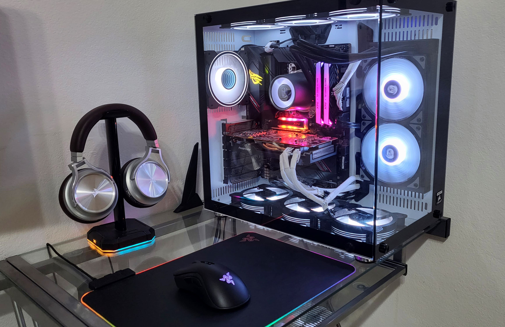
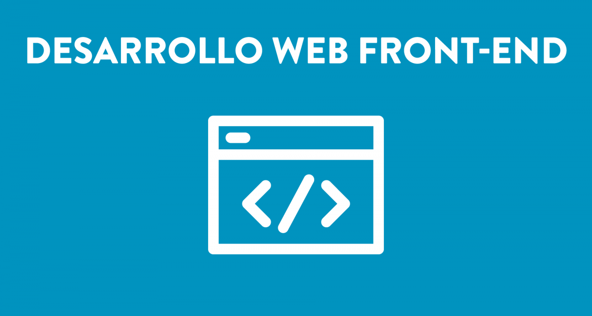

-

- 
- 

El desarrollo web es el proceso de creación y mantenimiento de sitios web. Los especialistas en desarrollo web son aquellos que se encargan de que los websites y las apps funcionen correctamente, sean eficientes, tengan dinamismo y buena organización. Se trata de un trabajo que implica colaborar con otros actores en la creación de sitios web y herramientas digitales, incluyendo a diseñadores gráficos, responsables del contenido y expertos en posicionamiento en buscadores, entre otros
Es el encargado de hacer efectivo todo lo dicho anteriormente. Es decir, los desarrolladores web hacen uso de varios lenguajes de programación para hacer sitios web que satisfagan completamente las necesidades de sus clientes. En función de la importancia del proyecto que se tenga entre manos, pueden ser varios los programadores que se encarguen de diferentes aspectos del Desarrollo Web y deban trabajar en equipo para sacarlo adelante. Además de escribir cientos de líneas de HTML, los Desarrolladores Web deben tener reuniones con clientes y diseñadores para conocer y entender sus objetivos, probar las funciones del sitio según se vayan haciendo avances, ver cuál es el rendimiento del sitio una vez que se pone en funcionamiento e incluso realizar un mantenimiento continuo. Para ello, saber escuchar y tener habilidades de comunicación y trabajo en equipo, es casi igual de imprescindible que manejar con los ojos cerrados los lenguajes de programación. El campo profesional del Desarrollo Web es uno de los que carece de profesionales expertos, por eso se ha convertido en uno de los trabajos más demandados y con salarios más que atractivos. Mucha demanda, muy poca oferta
M
C
H